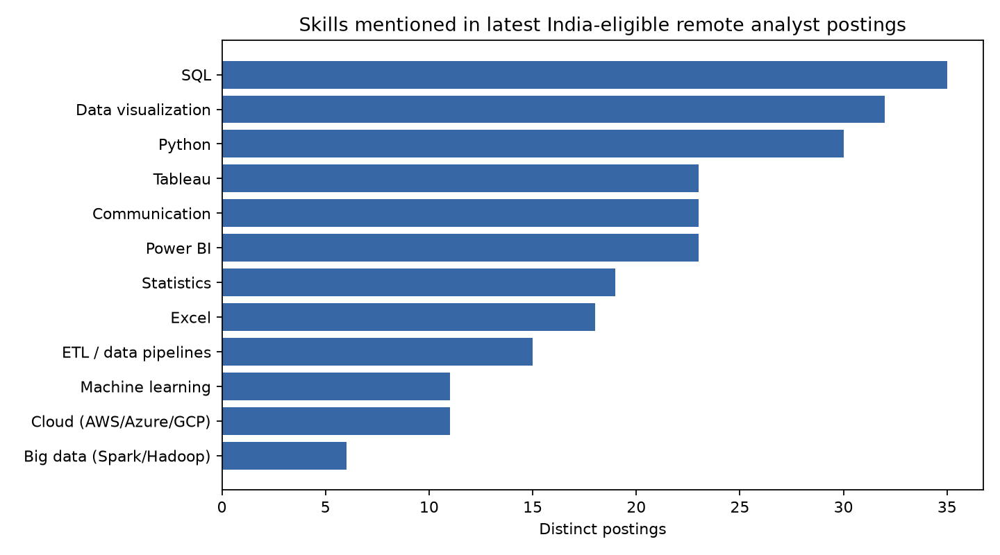
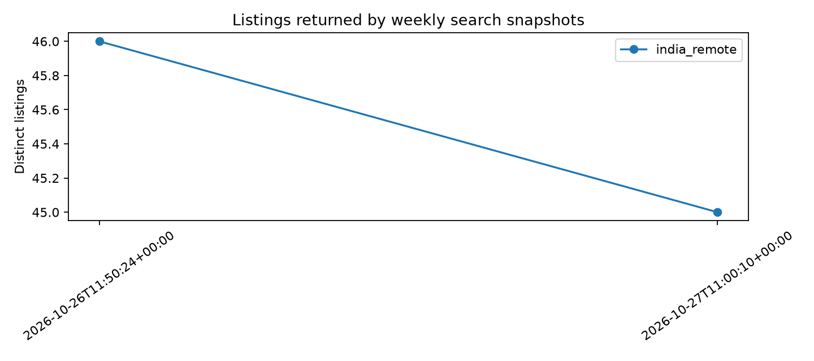

What do data analyst job ads ask for?
India-eligible remote listings · refreshed by weekly snapshots
Source: Himalayas public jobs API. The API returned 467 keyword candidates; the title filter retained 45 analyst listings. This is a remote-job sample filtered for India eligibility, not a census, and does not represent Chennai or on-site roles.
Skills mentioned

| Skill | Listings | Share |
|---|
| SQL | 35 | 77.8% |
| Data visualization | 32 | 71.1% |
| Python | 30 | 66.7% |
| Communication | 23 | 51.1% |
| Power BI | 23 | 51.1% |
| Tableau | 23 | 51.1% |
| Statistics | 19 | 42.2% |
| Excel | 18 | 40.0% |
| ETL / data pipelines | 15 | 33.3% |
| Cloud (AWS/Azure/GCP) | 11 | 24.4% |
Advertised salaries by experience label
| Experience | Currency | Period | Salary listings | Mean midpoint |
|---|
| mid | INR | annual | 2 | 637,500 |
| mid | USD | annual | 1 | 111,500 |
Only postings with disclosed salary are included. Currencies and pay periods are kept separate.
Weekly listing counts

| Collected (UTC) | Listings |
|---|
| 2026-10-26T11:50:24+00:00 | 46 |
| 2026-10-27T11:00:10+00:00 | 45 |
Written findings · Skill data · Salary data